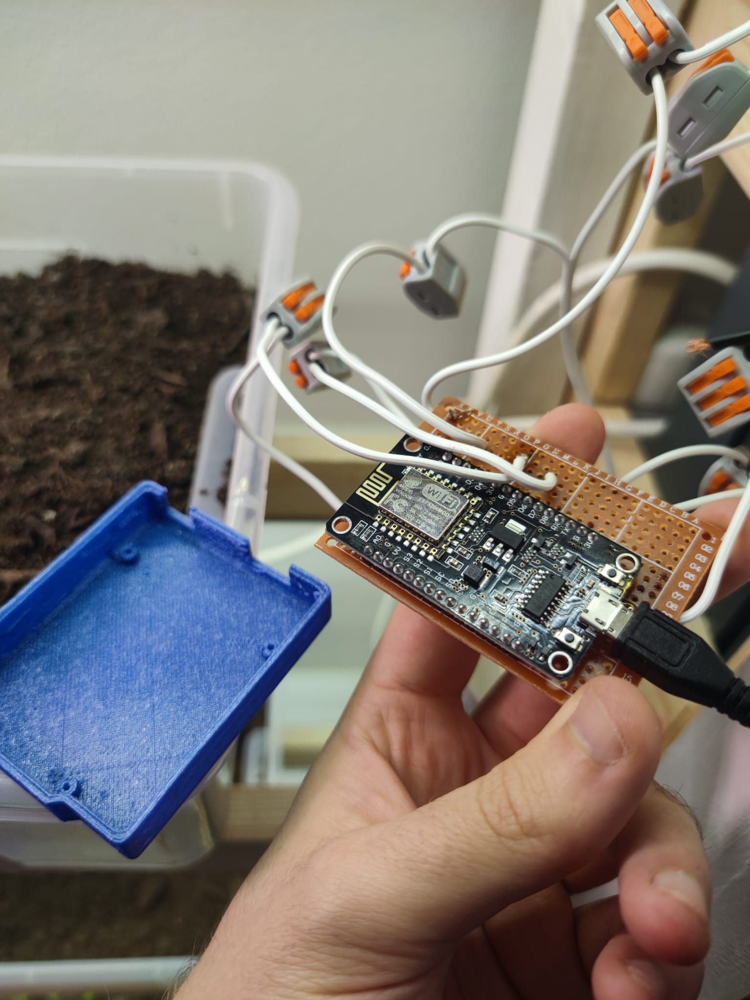

Light Control & Automation
System Overview
I built the lights in our living room and integrated them into Home Assistant. Like most of my remote projects, this setup uses my MQTT broker to communicate between the ESP32 and the Home Assistant interface. I’ve also set up physical switches for manual control.
Functionality
The lights can be turned on, off, or dimmed to any level in between - well, within the 255 steps of the duty cycle.

Kuvausteksti.

Kuvausteksti.

Kuvausteksti.
I have also added a human presence sensor, which activates just a few sets of LEDs at 10% brightness when it detects a presence between 23.00-6.00. This way I don't get blinded by the darkness or the brightness should I have the need to go to the kitchen at night.